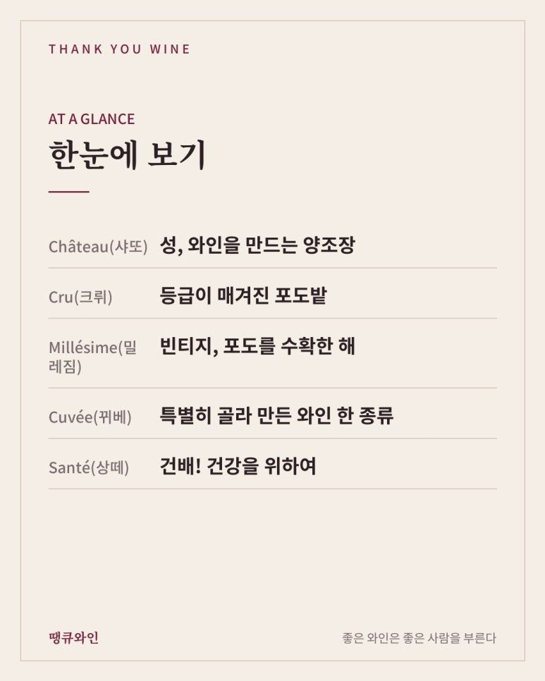
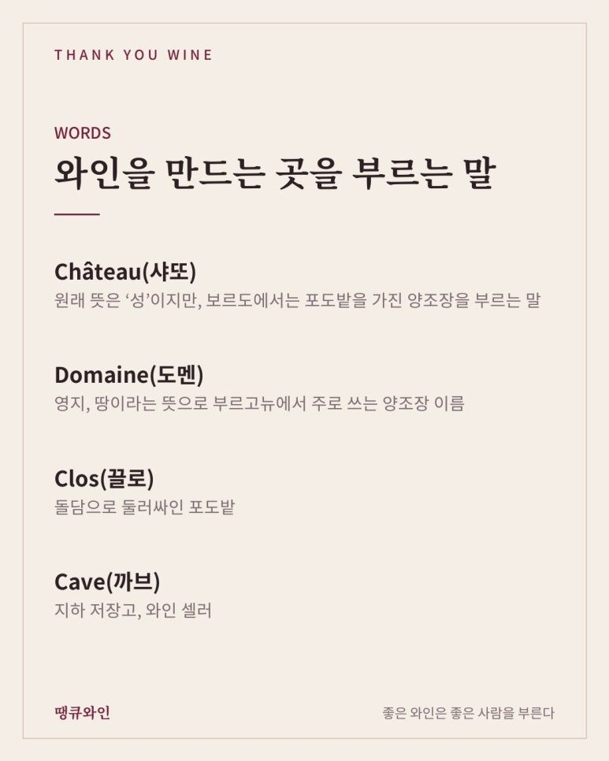
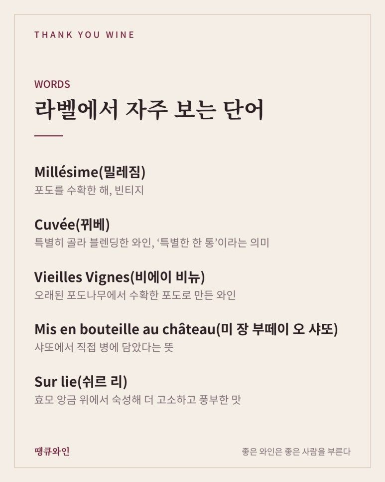
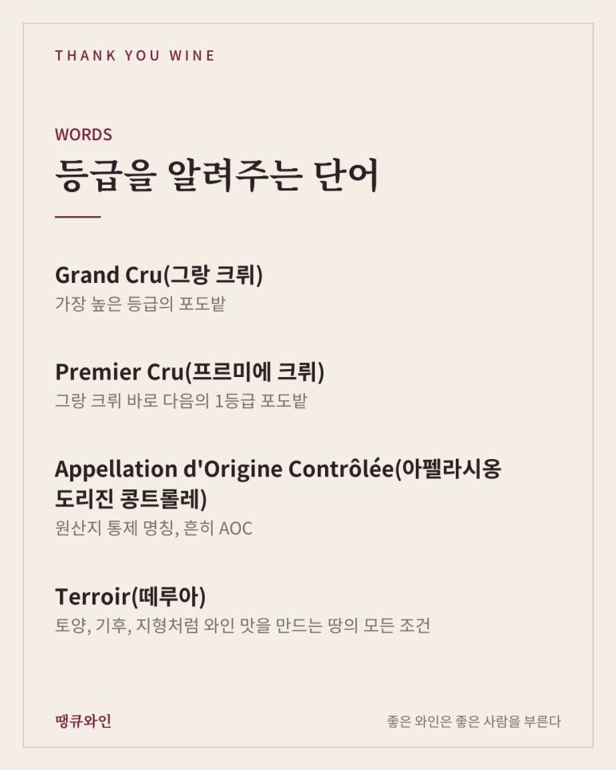
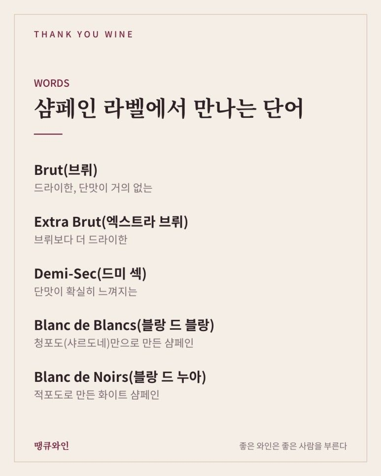
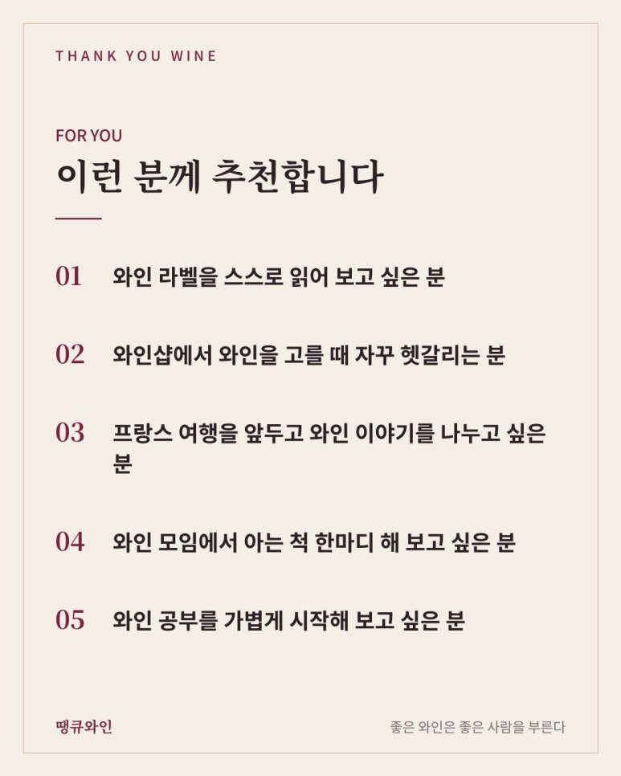

와인으로 배우는 프랑스어
라벨이 술술 읽히는 와인 프랑스어 단어 총정리
와인 라벨의 프랑스어 단어 몇 개만 알아도 라벨이 읽혀요. Château(샤또)는 양조장, Cru(크뤼)는 등급이 매겨진 포도밭, Millésime(밀레짐)은 빈티지, Cuvée(뀌베)는 특별히 골라 만든 와인, Santé(상떼)는 건배라는 뜻이에요.
와인을 마시다 보면 나도 모르게 외국어 단어를 하나둘 알게 됩니다.
샤또, 그랑 크뤼, 브뤼, 끄뤼…
처음에는 라벨에 적힌 낯선 글자였는데, 어느새 뜻을 알고 읽게 되죠.
그래서 땡큐와인에서 ‘와인으로 배우는 외국어’ 시리즈를 시작해 보려고 합니다.
첫 번째는 와인 라벨에서 가장 많이 만나는 언어, 프랑스어입니다.
이 단어들만 알아도 프랑스 와인 라벨이 훨씬 쉽게 읽히기 시작할 거예요.

한눈에 보는 와인 프랑스어
- Château(샤또): 성, 와인을 만드는 양조장
- Cru(크뤼): 등급이 매겨진 포도밭
- Millésime(밀레짐): 빈티지, 포도를 수확한 해
- Cuvée(뀌베): 특별히 골라 만든 와인 한 종류
- Santé(상떼): 건배! 건강을 위하여

와인을 만드는 곳을 부르는 말
프랑스 와인 라벨에서 가장 먼저 보이는 단어는 와인을 만든 곳의 이름입니다.
• Château(샤또): 원래 뜻은 ‘성’이지만, 보르도에서는 포도밭을 가진 양조장을 부르는 말
• Domaine(도멘): 영지, 땅이라는 뜻으로 부르고뉴에서 주로 쓰는 양조장 이름
• Clos(끌로): 돌담으로 둘러싸인 포도밭
• Cave(까브): 지하 저장고, 와인 셀러

그래서 보르도 와인에는 ‘샤또 ○○’, 부르고뉴 와인에는 ‘도멘 ○○’이라는 이름이 많이 보이는 것이죠.
라벨에서 자주 보는 단어
라벨의 작은 글씨에도 와인에 대한 많은 정보가 숨어 있습니다.
- Millésime(밀레짐): 포도를 수확한 해, 빈티지
- Cuvée(뀌베): 특별히 골라 블렌딩한 와인, ‘특별한 한 통’이라는 의미
- Vieilles Vignes(비에이 비뉴): 오래된 포도나무에서 수확한 포도로 만든 와인
- Mis en bouteille au château(미 장 부떼이 오 샤또): 샤또에서 직접 병에 담았다는 뜻
- Sur lie(쉬르 리): 효모 앙금 위에서 숙성해 더 고소하고 풍부한 맛
특히 비에이 비뉴는 땡큐와인에서도 자주 소개하는 단어인데요.
오래된 나무일수록 포도가 적게 열리는 대신, 맛이 더 진하고 깊어지는 경우가 많습니다.

등급을 알려주는 단어
프랑스 와인은 포도밭과 산지에 따라 등급이 나뉘어 있습니다.
- Grand Cru(그랑 크뤼): 가장 높은 등급의 포도밭
- Premier Cru(프르미에 크뤼): 그랑 크뤼 바로 다음의 1등급 포도밭
- Appellation d'Origine Contrôlée(아펠라시옹 도리진 콩트롤레): 원산지 통제 명칭, 흔히 AOC
- Terroir(떼루아): 토양, 기후, 지형처럼 와인 맛을 만드는 땅의 모든 조건

재미있는 점은 지역마다 같은 단어도 쓰임이 조금 다르다는 것인데요.
부르고뉴에서는 그랑 크뤼가 포도밭에 붙는 최고 등급이지만, 보르도의 1855년 등급에서는 ‘프르미에 그랑 크뤼’가 1등급 샤또를 가리킵니다.
샴페인 라벨에서 만나는 단어
샴페인 라벨에는 단맛과 품종을 알려주는 단어가 적혀 있습니다.
• Brut(브뤼): 드라이한, 단맛이 거의 없는
• Extra Brut(엑스트라 브뤼): 브뤼보다 더 드라이한
• Demi-Sec(드미 섹): 단맛이 확실히 느껴지는
• Blanc de Blancs(블랑 드 블랑): 청포도(샤르도네)만으로 만든 샴페인
• Blanc de Noirs(블랑 드 누아): 적포도로 만든 화이트 샴페인

‘섹(Sec)’은 원래 ‘마른, 드라이한’이라는 뜻인데, 샴페인에서는 오히려 단맛이 조금 있는 쪽을 가리켜서 헷갈리기 쉬운 단어이기도 합니다.
지명에 숨은 뜻
와인 산지의 이름에도 재미있는 뜻이 숨어 있습니다.
- Châteauneuf-du-Pape(샤또뇌프 뒤 빠프): ‘교황의 새로운 성’, 14세기 교황이 아비뇽에 머물던 시절에서 유래
- Entre-Deux-Mers(앙트르 되 메르): ‘두 바다 사이’, 실제로는 가론강과 도르도뉴강 사이에 있는 지역
- Côte(꼬뜨): 언덕, 경사면, 꼬뜨 도르는 ‘황금 언덕’
- Pouilly-Fumé(푸이 퓌메): ‘퓌메’는 연기, 훈연이라는 뜻
- Saint(쌩): 성인, 생테밀리옹이나 생쥘리앙처럼 성인 이름에서 온 마을
그래서 지명의 뜻을 알고 나면, 와인을 마실 때 그 땅의 풍경과 역사가 함께 떠오르게 됩니다.
와인 자리에서 바로 쓰는 프랑스어
마지막으로 와인 자리에서 바로 써먹을 수 있는 표현입니다.
• Santé!(상떼): 건배! 건강을 위하여
• À votre santé!(아 보트르 상떼): 당신의 건강을 위하여, 조금 더 정중한 건배
• Sommelier(소믈리에): 와인을 추천하고 서비스하는 전문가
• Vigneron(비뉴롱): 포도를 재배하고 와인을 만드는 사람
다음 와인 모임에서 잔을 들 때 “상떼!” 한마디로 분위기를 띄워 보세요.
와인 프랑스어, 이런 분께 추천합니다
- 와인 라벨을 스스로 읽어 보고 싶은 분
- 와인샵에서 와인을 고를 때 자꾸 헷갈리는 분
- 프랑스 여행을 앞두고 와인 이야기를 나누고 싶은 분
- 와인 모임에서 아는 척 한마디 해 보고 싶은 분
- 와인 공부를 가볍게 시작해 보고 싶은 분

자주 묻는 질문
A. 이탈리아어와 스페인어 편이 이어집니다. 바롤로, 끼안띠, 리제르바, 크리안사 같은 단어의 뜻을 정리해 드릴게요.
결국 와인 프랑스어의 매력은 ‘라벨이 이야기가 되는 것’입니다 낯선 외국어였던 라벨의 단어들은 뜻을 알고 나면 와인의 이야기가 됩니다. 그래서 저는 와인 프랑스어를
“한 잔씩 마실 때마다 저절로 늘어나는 단어장”
이라고 소개하고 싶습니다.
오늘 배운 단어 중 하나를 다음 와인 라벨에서 찾아보세요. 와인이 조금 더 가깝게 느껴질 거예요.
이 글은 땡큐와인 네이버 블로그에 먼저 올린 글이에요.